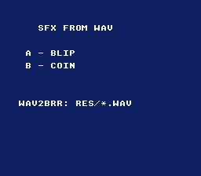

|
OpenSNES
Modern Open-Source SNES Development SDK
|
|
OpenSNES
Modern Open-Source SNES Development SDK
|

The smallest "press a button, hear a sound" example — and a showcase of the zero-config .wav → .brr build rule. res/blip.wav and res/coin.wav are ordinary PCM WAV files; the build system converts each to a SNES BRR sample with wav2brr automatically, exactly the way a .png becomes a .pic. No .brr is committed — they are generated on demand. Press A for a blip, B for a coin.
This is the one-shot / sound-effect counterpart to the SNESMOD examples: for a jump, a hit, or a UI blip you load a BRR sample directly and trigger it, with no tracker soundbank involved.
The .incbin in data.asm makes res/blip.brr a build prerequisite, and make/common.mk's %.brr: %.wav rule generates it. To make a looping sample (a sustained tone), run wav2brr --loop START END by hand and commit the .brr instead. See docs/tutorials/audio.md ("One-shot samples from WAV").
Run sfx_from_wav.sfc in any emulator (or luna run sfx_from_wav.sfc).
console, dma, audio, input, background, text